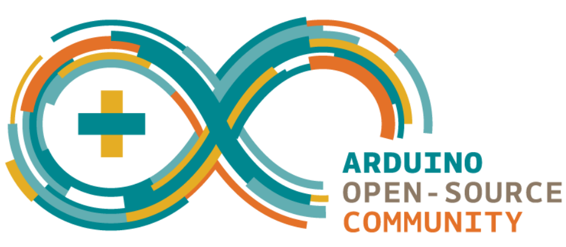
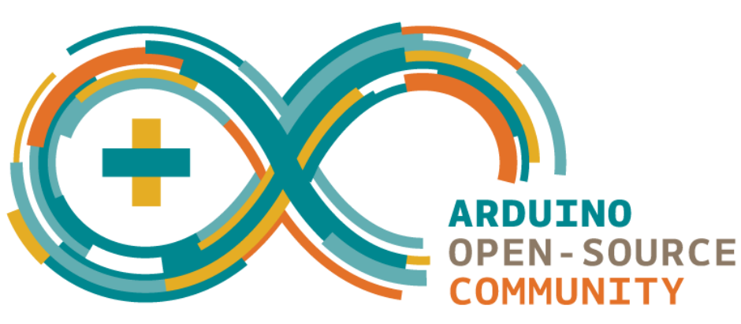

Diccionario
Actuadores

Entrada

Evento

Procesar

Salida
 Definición
Definición
Arduino
|  |
Definición: • Ecosistema formado por diversas plataformas de hardware libre |
Sensores

Definición
|  |
Definición: • Ecosistema formado por diversas plataformas de hardware libre |

Antes de comenzar a ver cosas nuevas vamos a recordar qué sabemos ya sobre los robots.
Seguro que te sorprendes de la cantidad de cosas que ya conoces sobre cómo funcionan.
Comparte con tu compañero y/o compañera la idea que tienes sobre qué es un robot.
Veamos primero cómo sentimos los humanos.
Imagina que alguien de la clase te da un pellizco.
a) En pareja tenéis que explicar a los demás:
b) Dibuja un esquema que explique lo ocurrido.
En esta actividad en grupo te proponemos que intentes darte cuenta de todo lo que tu equipo sabe sobre este tema.
Cuando trabajamos en grupo aprendemos también en equipo. Hay compañeros que recuerdan muchas cosas, otras que hablan muy bien, otros que son muy habilidosos con las manos o con los pies, otras dibujan estupendamente…
Todos tenemos superpoderes para resolver las actividades, pero cuando los unimos, aprendemos juntos y somos capaces de resolver cualquier desafío.
Por ello es importante que en tu equipo sigáis estos consejos:
Realiza el ejercicio en pareja. Si pensamos en nuestro cuerpo como si fuera un robot:
Definición:
Del verbo procesar. Realizar una serie de operaciones con unos datos.
Ejemplo:
El cerebro procesa la información a gran velocidad.
Definición:
Plural de actuador. Es un dispositivo capaz de transformar energía eléctrica en movimiento, luz o sonido.
Ejemplo:
Un motor eléctrico es un actuador que transforma energía eléctrica en energía mecánica.
Definición:
Plural de sensor. Es un dispositivo que tiene la capacidad de detectar movimientos, ruidos, presión, luces...
Ejemplo:
Cuando entramos en un baño el detector de presencia, que es un sensor de distancia, permite que se encienda la luz.
Clasifica los órganos del cuerpo humano cómo si fuéramos un robot en: sensores, procesador y actuadores
Una vez realizadas las actividades, estaría bien que reflexiones sobre cuáles han sido tus habilidades y limitaciones en esta tarea. Saber identificarlas, nos ayuda a conocernos mejor a nosotros mismos y es una buena estrategia para saber enfrentarnos a las tareas:
Obra publicada con Licencia Creative Commons Reconocimiento No comercial Compartir igual 4.0